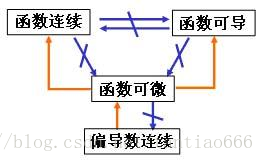

"让我留下吧，" 他说，“浴室里确实有香皂。”
# 反常积分
# 定义
-
如果函数f 定义在[a,+∞) 上，且在任意闭区间[a,u] 上可积，且limu→∞∫auf(x)dx 该极限收敛，则记该极限为∫u∞f(x)dx，称为无穷积分。
-
如果函数f 定义在(a,b] 上，且在 a 的任意右邻域无界，且在任意闭区间[u,b]⊂(a,b] 上可积，且limu→a∫ubf(x)dx 收敛，则记该极限为∫abf(x)dx，称为瑕积分，其中 a 是瑕点。
# 性质
# 无穷积分
# 柯西准则
# 线性性质、区域可加、绝对收敛
-
线性性质：加号可拆，数乘可提。
-
绝对收敛：
若f 在任何有限区间[a,u] 上可积，且有∫a+∞∣f(x)∣dx 收敛，则有∫a+∞f(x)dx 收敛，且∫a+∞f(x)dx≤∫a+∞∣f(x)∣dx
但反之不成立，称∫a+∞f(x)dx 收敛但∫a+∞∣f(x)∣dx 不收敛的无穷积分为条件收敛。
# 瑕积分
# 柯西准则
# 线性性质、区域可加、绝对收敛
# 两个重要反常积分
- 对于无穷积分∫1+∞xpdx，当p>1 时收敛，p≤1 时发散。
- 对于瑕积分∫ab(x−a)pdx，当0<p<1 时收敛，p≥1 时发散。
# 收敛判别法
# 无穷积分
# 比较法则
- 若f,g 都在任何有限区间[a,u] 上可积，g(x)>0，且有limx→+∞g(x)∣f(x)∣=c，
- 当0<c=+∞ 时，∫a+∞∣f(x)∣dx 与∫a+∞g(x)dx 同敛散
- 当c=0 时，由∫a+∞g(x)dx 收敛可推出∫a+∞∣f(x)∣dx 收敛
- 当c=+∞ 时，由∫a+∞g(x)dx 发散可推出∫a+∞∣f(x)∣dx 发散。
# 柯西判别法
- 设f 定义于[a,+∞)，在任何有限区间[a,u] 上可积，且limx→+∞xp∣f(x)∣=λ，则有：
- p>1,0≤λ<+∞ 时，∫a+∞∣f(x)∣dx 收敛
- p≤1,0<λ≤+∞ 时，∫a+∞∣f(x)∣dx 发散
# 迪利克雷判别法
-
若F(u)=∫auf(x)dx 在[a,+∞) 上有界，
g(x) 在[a,+∞) 上单调且趋于 0,
则有∫a+∞f(x)g(x)dx 收敛。
# 阿贝尔判别法
-
若∫a+∞f(x)dx 收敛，
g(x) 在[a,+∞) 单调有界，
则有∫a+∞f(x)g(x)dx 收敛。
# 瑕积分
# 比较法则
把无穷积分中的趋近于正无穷改成趋近于 a
# 柯西判别法
- 设f 定义于(a,b]，在任何有限区间[u,b]⊂(a,b] 上可积，且limx→a(x−a)p∣f(x)∣=λ，则有：
- 0<p<1,0≤λ<+∞ 时，∫a+∞∣f(x)∣dx 收敛
- p≥1,0<λ≤+∞ 时，∫a+∞∣f(x)∣dx 发散
# 迪利克雷判别法
-
若F(u)=∫ubf(x)dx 在(a,b] 上有界，
g(x) 在x→a+ 时单调且趋于 0,
则有∫abf(x)g(x)dx 收敛。
# 阿贝尔判别法
-
若∫abf(x)dx 收敛，
g(x) 在(a,b] 单调有界，
则有∫abf(x)g(x)dx 收敛。
# 数项级数
# 数项级数敛散性
# 定义
- 若数项级数的部分和{Sn=∑i=1nai} 收敛于 S，即limn→+∞Sn=S，则称该数项级数收敛。
# 柯西准则
-
数项级数u1+u2+... 收敛⇔ 任给ϵ>0，存在正整数N，使得对任意n>m>N，都有：
∣um+um+1+...+un∣<ϵ
-
特别地，数项级数收敛的一个必要条件是limn→+∞un=0
# 基本性质
# 两个重要级数
- ∑n=0+∞aqn=1−qa，当且仅当∣q∣<1 收敛。
- 调和级数1+21+...+n1+... 发散。
# 正项级数
# 敛散性判别
# 充要条件
- 正项级数∑un 收敛的充要条件是部分和{Sn} 有界。
# 比较原则
-
若{un},{vn} 是两个正项级数，且limn→+∞vnun=l，则
- 0<l<+∞ 时，两级数同敛散
- l=0 时，∑vn 收敛可推出∑un 收敛
- l=+∞ 时，∑vn 发散可推出∑un 发散
-
常常跟等比级数和 p 级数比较：
∑np1，p>1 收敛，0≤p≤1 时发散。
# 比式判别法
# 根式判别法
- 若limn→+∞nun=l，
- l<1，级数∑un 收敛
- 若l≥1，级数∑un 发散
# 拉贝判别法
- 若limn→+∞n(1−unun+1)=r，则
- r>1 时，级数∑un 收敛，
- r<1 时，级数∑un 发散
# 积分判别法
- 设f 是[1,+∞) 上非负递减函数，则正项级数∑n=1+∞f(n) 于反常积分∫1+∞f(x)dx 同敛散。
# 一般项级数
# 交错级数
# 莱布尼茨判别法
- 若un>0，且单调趋于 0，则交错级数∑(−1)n+1un 收敛。
- 若满足莱布尼茨判别饭，有|\sum_{i=n+1}^{+\infin}u_i|\leq u_
# 级数重排
# 重排定理
- 若一般项级数∑un 绝对收敛，则将其任意重排后仍绝对收敛，且级数和不变。
# 黎曼定理
- 若一般项级数∑un 条件收敛，则对于任意数 A，存在一种重排方案使得∑vn=A，特别地，也可以找到一种重排方案使级数发散。
# 柯西定理
- 若∑un,∑vn 都绝对收敛，且∑∣un∣=A,∑∣vn∣=B，则对所有乘积uivj 的任意重排得到的级数均绝对收敛，且绝对收敛和为AB。
# * 阿贝尔变换和引理
-
∑ϵivi=(ϵ1−ϵ2)δ1+(ϵ2−ϵ3)δ2+...
其中δk=v1+...vk
-
特别的，若ϵi 单调，且∣δk∣≤A 有界，则有
∣k=1∑nϵkvk∣≤3∗max{∣ϵ∣}A
# 阿贝尔判别法
# 迪利克雷判别法
# 函数列与函数项级数
# 函数列
# 一致收敛性
-
若对于任意ϵ>0，存在正整数N，使得对于任意n>N，有：
对于任意x∈D，∣fn(x)−f(x)∣<ϵ，则称函数列在D 上一致收敛于f(x)，记作fn(x)⇉f(x),x∈D.
# 柯西准则
-
函数列{fn} 在 D 上一致收敛⇔ 对于任给ϵ>0，总存在正整数N，使得对于任意n,m>N，对于任意x∈D，恒有
∣fn(x)−fm(x)∣<ϵ
# 余项准则
# 函数项级数
- 函数项级数的部分和是一个函数列
- 函数项级数的敛散性可以转化为其部分和（函数项级数）的敛散性
# 一致收敛性
# 柯西准则
# 余项准则
# 优级数判别法
- 若对于任意x∈D,n，恒有∣un(x)∣≤Mn，其中∑Mn 为收敛的正项级数，则∑un(x) 在 D 上一致收敛。
# 阿贝尔判别法
-
若∑un(x) 在 D 上一致收敛
且对于每个x∈D，vn(x) 都关于 n 单调，且vn(x) 关于 x 一致有界 (即对于所有的x∈D 都有个公共的 M，使得∣vn(x)∣≤M)
则∑un(x)vn(x) 在 D 上一收敛
# 迪利克雷判别法
-
若un(x) 的部分和函数列{Un(x)} 在 D 上一致有界
且对于每个x∈D，vn(x) 关于 n 单调，且在 D 上vn(x)⇉0
则∑un(x)vn(x) 在 D 上一致收敛
# 必要条件
- 函数项级数∑un(x) 在 D 上一致收敛的必要条件是函数列{un(x)} 在 D 上一致收敛于 0.
# 一致收敛的函数列与函数项级数的性质
# 一致收敛的函数列性质
# 极限交换
# 连续性
# 可积性
# 可微性
# 补充说明：处处收敛却不一致收敛的例子
fn(x)=sinnx,x∈[0,2π]f(x)=n→+∞limfn(x)=⎩⎪⎪⎨⎪⎪⎧1,x=2π0,x=2π所以对于任一给定的x，{fn(x)}均收敛但显然找不到一个公共的N，使得∀x∈[0,2π],n>N,都有∣fn(x)−f(x)∣<ϵ
# 一致收敛的函数项级数性质
# 逐项求极限
# 连续性定理
- 若函数项级数∑un(x) 在闭区间 D 上一致收敛，且每一项都连续，则其和函数S(x) 也在闭区间 D 上连续。
# 逐项求积
# 逐项求导
# 幂级数
- 定义：形如∑n=0∞anxn，也可以看作函数项级数，un(x)=anxn
# 收敛性与收敛半径
# 阿贝尔定理
-
若幂级数在xˉ=0 处收敛，则对于所有的x,∣x∣<∣xˉ∣，幂级数在x 处收敛。
反之，若幂级数在xˉ=0 处发散，则对于所有的x,∣x∣>∣xˉ∣，幂级数在x 处发散。
由阿贝尔定理，幂级数的收敛域一定是以原点为中心，形如(−R,R) 的一个区间，其中 R 称为收敛半径。对于所有x∈(−R,R)，幂级数均收敛，对于所有x>R或x<−R，幂级数均发散。但x=R和x=−R 是否收敛需要单独验证。
# 收敛半径求法
-
对于幂级数，若有limn→∞∣an∣∣an+1∣=ρ，或limn→∞n∣an∣=ρ,limn→∞ˉn∣an∣=ρ(最大值)，(条件等价)，都有：
R=ρ1。（注：∞1=0,01=∞)
# 幂级数性质
# 内闭一致收敛性
# 连续性，可积性，可导性
- 幂级数的和函数在其收敛域上连续可导，在收敛于任一闭子区间可积。
# 逐项求极限、求积分、求导
x→a−limn=0∑∞anxn=n=0∑∞x→a−limanxn=n=0∑∞anan∫0xn=0∑∞antndt=n=0∑∞∫0xantndt=n=0∑∞n+1anxn+1dxdn=0∑∞anxn=n=0∑∞nanxn−1以上x∈(−R,R)
- 注：逐项求导逐项求积分后得到的幂级数收敛半径不变，仍为 R。但边界处（x=±R）的敛散性可能变化。
# 幂级数的运算
n=0∑∞anxn=n=0∑∞bnxn,∣x∣<min{∣Ra∣,∣Rb∣}⇔an=bn,n=0,1,2,...(n=0∑∞anxn)(n=0∑∞bnxn)=n=0∑∞cnxn,cn=k=0∑nakbn−k
# 傅里叶级数
# 正交函数系
-
若函数列{ϕn(x)} 满足：
-
ϕn(x) 在[a,b] 上可积
-
∫abϕn(x)ϕm(x)dx={λn=0,n=m0,n=m
则称这个函数列为[a,b] 的一个正交函数系。
-
特别地，[−π,π] 上的正交三角函数系：
1,cosx,sinx,cos2x,sin2x,....
[−l,l] 上的正交三角函数系：
1,coslπx,sinlπx,cosl2πx,sinl2πx,...
# 傅里叶级数
-
设f 是周期为2l 在[−l,l] 上可积的函数，则称
f(x)=2a0+n=1∑∞(ancoslnπx+bnsinlnπx)
为f 在三角函数系下的傅里叶级数，其中
⎩⎪⎪⎪⎪⎨⎪⎪⎪⎪⎧an=l1∫−llf(x)coslnπxdxn=0,1,2...bn=l1∫−llf(x)sinlnπxdxn=1,2,...
-
特别地，f 是偶函数时，又bn≡0，f 是奇函数时，an≡0
-
注意函数展开时，需要将函数延拓致周期函数。
# 收敛定理
- 设f 为周期为2l 的函数，在[−l,l] 上按段光滑（只有有限个跳跃间断点，其余连续）：则有，对于某个x0
- 若f(x) 在x0 处连续，则2a0+∑n=1∞(ancoslnπx0+bnsinlnπx0)=f(x0)，即傅里叶级数收敛于函数值
- 若f(x) 在x0 处跳跃间断，则2a0+∑n=1∞(ancoslnπx0+bnsinlnπx0)=2f(x0−0)+f(x0+0)，即傅里叶级数收敛于两个单侧极限平均值。
# * 黎曼 - 勒贝克定理
p→∞lim∫abf(x)sinpxdx=0=p→∞lim∫abf(x)cospxdx
# * 帕塞瓦尔等式
# 多元函数的极限
# 平面点集
- 概念：（内点，界点，外点），（聚点，孤立点），（开集，闭集，有界集），（开域，闭域，区域）
- 定理：柯西准则，闭区域套定理，聚点定理，致密性定理，有限覆盖定理
# 二元函数的极限和连续性
# 重极限
在点P0(x0,y0)处，若有∀ϵ>0,均∃δ>0,使得∀x∈U0(P0,δ)(矩形邻域，圆形邻域均可)，有∣f(x,y)−A∣<ϵ，则称重积分(x,y)→(x0,y0)limf(x,y)=A
- 重积分存在的一个必要条件是沿着任何路径趋近P0 得到的极限都一样。
# 累次极限
x→x0limy→y0limf(x,y),y→y0limx→x0limf(x,y)
- 两个累次积分不一定相等。例f=⎩⎪⎪⎨⎪⎪⎧xsiny1y=00y=0
- 若重积分和上面两个累次积分都存在，那么三者都相等。
- 若两个累次积分都存在却不相等，则重积分一定不存在。
# 连续性
-
f 在(x,y) 处连续⇔lim(Δx,Δy)→(0,0)f(x+Δx,y+Δy)−f(x,y)=0
-
若f 在(x0,y0) 处连续，则一元函数f(x0,y)和f(x,y0) 分别在x=x0和y=y0 处连续，但反之不成立，例如
f(x,y)=⎩⎪⎨⎪⎧x2+y2xy(x,y)=00(x,y)=0
# 局部性质
- 局部有界性、保号性、四则法则、复合法则
- 若是在闭区域上的连续函数还有一致连续性，介值性。
# 多元函数的微分
# 可微性
# 全微分
- 二元函数z=f(x,y) 在点P0 某邻域内有定义，则其增量能写成Δz=AΔx+BΔy+o(x2+y2)，即其全微分dz=Adx+Bdy 存在的充要条件是limρ→0ρΔz−fx′(x0,y0)Δx−fy′(x0,y0)Δy=0，其中ρ=Δx2+Δy2，ρ→0⇔(Δx,Δy)→(0,0)，是个重积分。
# 可微、连续、可偏导的关系如下

# 反例
# 可微但偏导不连续
f(x,y)=⎩⎪⎨⎪⎧x2+y2xy(x,y)=00(x,y)=0
# 连续但不可微 & 连续却不可导
# 可导但不可微
f(x,y)=⎩⎪⎪⎨⎪⎪⎧x2+y2xy(x,y)=00(x,y)=0
- 在原点处两个偏导数都是 0，可导。但在原点出不可微。
# 可导但不连续
f(x,y)=⎩⎪⎪⎨⎪⎪⎧x2+y2xy(x,y)=00(x,y)=0
(x,y)→(0,0)limf(x,y)令y=kx,=x→0lim1+k2k不存在（与路径有关）
# 几何意义
-
z=f(x,y) 在(x0,y0) 处切平面为z−z0=fx′(x0,y0)(x−x0)+fy′(x0,y0)(y−y0)
-
切线就是切平面的法向量。
# 链式求微分
# 方向导数与梯度
# * 泰勒定理
f(x0+h,y0+k)=f(x0,y0)+(h∂x∂+k∂y∂)f(x0,y0)+...+n!1(h∂x∂+k∂y∂)nf(x0,y0)+(n+1)!1(h∂x∂+k∂y∂)n+1f(x0+θh,y0+θk)θ∈(0,1)
# 隐函数
# 隐函数存在唯一性定理
-
函数F(x,y) 在(x0,y0) 的某邻域 D 内满足
- 连续
- F(x0,y0)=0
- Fy′(x0,y0)=0
- 在 D 内有连续的偏导数Fy′(x,y)
则确定了一个定义在(x0−α,x0+α) 上的隐函数y=f(x) 使得
- f(x0)=y0
- f(x) 在定义域内连续
- F(x,f(x))≡0
# 隐函数可微性定理
- 若函数F(x) 满足存在唯一性定理的条件，在加上Fx′(x,y) 在 D 内也连续，则有
f′(x)=−Fy′(x,y)Fx′(x,y)
# * 隐含数组
-
若函数组{F(x,y,u,v)=0G(x,y,u,v)=0 满足：
- F(x0,y0,u0,v0)=G(x0,y0,u0,v0)=0
- F,G 连续
- F,G 有连续的一阶偏导数
- J=∂(u,v)∂(F,G)∣∣∣∣∣(x0,y0,u0,v0)=0
则存在{u=f(x,y)v=g(x,y)
-
f,g 也是连续的，也有偏导数。具体求法通常直接对函数组左右同时求偏导解方程好了。
# 几何应用
# 平面曲线切线
- F(x,y)=0 在(x0,y0) 处切线方程为Fx′(x0,y0)(x−x0)+Fy′(x0,y0)(y−y0)=0
# 空间曲线切线
⎩⎪⎪⎨⎪⎪⎧x=x(t)y=y(t)z=z(t)
的切线为\frac{x-x_0}{x'(t_0)}=\frac{y-y_0}{y'(t_0)}=\frac{z-z_0}
# 空间曲面切平面
-
F(x,y,z)=0 的切平面为Fx′(x0,y0,z0)(x−x0)+Fy′(x0,y0,z0)(y−y0)+Fz′(x0,y0,z0)(z−z0)=0
-
法线直接求切平面法线。
# 条件极值
-
求解f(x1,x2,...,xn) 在约束组ϕi(x1,x2,...,xn)=0,i=1,2,..,m 情况下的极值。
-
拉格朗日数乘法，令L=f+∑i=1mλiϕi
求解方程组⎩⎪⎪⎪⎨⎪⎪⎪⎧∂xi∂L=0∂λi∂L=0
-
验证 f 的黑塞矩阵在所求出的(x1,x2,...,xn) 处是否是正定矩阵（极小值），或负定矩阵（极大值）。
# 含参量积分
# 含参量正常积分
# 性质
# 连续性
-
若f(x,y) 在区域G={(x,y)∣a≤x≤b,c(x)≤y≤d(x)} 上连续，且c(x),d(x) 在[a,b] 上连续，则
含参量积分F(x)=∫c(x)d(y)f(x,y)dy 在[a,b] 上连续。
# 可微性
-
若f 与∂x∂ 在[a,b]×[c,d] 上连续，则F(x)=∫cdf(x,y)dy 可微，且
dF(x)=[∫cd∂x∂f(x,y)dy]dx
-
dxd∫c(x)d(x)f(x,y)dy=∫c(x)d(x)∂x∂f(x,y)dy+f(x,d(x))d′(x)−f(x,c(x))c′(x)
# 可积性
# 含参量反常积分
# 定义
-
含参量反常积分F(x)=∫a+∞f(x,y)dy 要求反常积分在[a,b] 上处处收敛。
-
一致收敛性：一致（对于 x）收敛（指无穷积分收敛），即：
∀ϵ>0,∃N∈N∗,s.t.∀x∈[a,b],M>N,都有∣∫a+∞f(x,y)dy−∫aMf(x,y)dy∣<ϵ
# 一致收敛性的判别法
# M 判别法
- 设∫a+∞f(x,y)dy 在x∈T 上收敛，若
∣f(x,y)∣≤F(y),a≤y<+∞,且∫a+∞F(y)dy收敛
则∫a+∞f(x,y)dy 关于x∈T 一致收敛。
# 阿贝尔判别法
-
若∫a+∞f(x,y)dy 关于 x 一致收敛
g(x,y) 关于 y 单调，且作为二元函数是有界的
则∫a+∞f(x,y)g(x,y)dy 关于 x 一致收敛
# 迪利克雷判别法
-
若∀A≥a,∫aAf(x,y)dy 关于 x 一致有界
g(x,y) 关于 y 单调且极限limy→∞g(x,y)=0 关于 x 是一致的
则∫a+∞f(x,y)g(x,y)dy 关于 x 一致收敛
# Dini 定理
- 设f(x,y) 在D={a≤y<+∞,α≤x≤β} 上连续不变号，ϕ(x)=∫a+∞f(x,y)dy 在[α,β] 上连续，则
∫a+∞f(x,y)dy关于x∈[α,β]一致收敛
# 性质
# 连续性
- 设f 在[a,b]×[c,+∞) 上连续，若F(x)=∫c+∞f(x,y)dy 在[a,b] 上一致收敛，则F(x) 在[a,b] 上连续。
# 可微性
- 设f,fx′在[a,b]×[c,+∞) 上连续，, 若I(x)=∫c+∞f(x,y)dy 在[a,b] 上处处收敛，∫c+∞fx′(x,y)dy 在[a,b] 上一致收敛，则I(x) 在[a,b] 上可微，I′(x)=∫abfx′(x,y)dy
# 可积性
- 设f 在[a,b]×[c,+∞) 上连续，若F(x)=∫c+∞f(x,y)dy 在[a,b] 上一致收敛，则
∫abdx∫c+∞f(x,y)dy=∫c+∞dy∫abf(x,y)dx
# 变量等价性
设f 在[a,+∞)×[c,+∞) 上连续
- 若∫a+∞f(x,y)dx 关于 y 在任何闭区间上一致收敛，则∫c+∞f(x,y)dy 关于 x 在任何闭区间上一致收敛。
- 积分∫a+∞dx∫c+∞∣f∣dy 与∫c+∞dy∫a+∞∣f∣dx 中如果有一个收敛则另一个也收敛，且两者相等。
# 欧拉积分
B(p,q)=∫01xp−1(1−x)q−1dx(p,q>0),Γ(s)=∫p+∞xs−1e−xdx
称为第一类、第二类欧拉积分
# 性质
Γ(s+1)=sΓ(s),s>0lnΓ(s)下凸Γ(2s)=π22s−1Γ(s)Γ(s+21)
余元公式：
Γ(s)Γ(1−s)=sin(sπ)π
B(p,q)=B(q,b)B(p,q+1)=p+qqB(p,q)B(m,n)=(m+n−1)!(m−1)!(n−1)!
B(p,q)=Γ(p+q)Γ(p)Γ(q)Γ(s)=∫0+∞xs−1e−xdx=2∫0+∞x2s−1e−x2dx=ps∫0+∞xs−1e−pxdxB(p,q)=∫01xp−1(1−x)q−1dx=2∫02πsin2q−1θcos2p−qθdθ
# 曲线积分
# 第一型曲线积分
# 性质
# 计算
-
若L={x=x(t)y=y(t),t∈[α,β]，则
∫Lf(x,y)ds=∫αβf(x(t),y(t))x′(t)2+y′(t)2dt
-
若L:y=y(x),x∈[a,b] 则
∫Lf(x,y)ds=∫abf(x,y(x))1+y′(x)2dx
# 应用
对于空间曲线段 L，有
# 质量
m=∫Lρ(x,y)ds
# 重心
xˉ=∫Lρ(x,y)ds∫Lxρ(x,y)ds
# 转动惯量
Ix=∫Ly2ρ(x,y)ds
# 第二型曲线积分
∫LF⋅ds,其中F=(P(x,y),Q(x,y)),ds=(dx,dy)
# 性质
# 可加性
# 计算
L={x=x(t)y=y(t),t∈[α,β]∫ABP(x,y)dx+Q(x,y)dy=∫αβP(x(t),y(t))x′(t)dt+Q(x(t),y(t))y′(t)dt
# 应用
# 变力做功
W=∫LF(x,y)⋅ds
# 重积分
# 二重积分
# 定义
- 注意分割时，应分割成 “n 个可求面积的小区域”，然后在每个小区域上任取点。
# 可积的条件
# 必要条件
- 函数f(x,y) 在 D 上可积的必要条件是在 D 上有界。
# 充分条件
- 有界闭区域 D 上的连续函数都可积
- * 有界闭区域 D 上的有界函数 f，如果它的不连续点都落在有线条光滑曲线上，则它可积。
# 充要条件
# 性质
# 线性性
# 区域可加性
# 单调性
# 绝对可积性
∣∬Df(x,y)dσ∣≤∬D∣f(x,y)∣dσ
# 中值定理
∬Df(x,y)dσ=f(ξ,η)SD
# 二重积分转化为二次积分
f(x,y)在D={a≤x≤b,c(x)≤y≤d(x)}上可积，则∬Df(x,y)dσ=∫abdx∫c(x)d(x)f(x,y)dy
# 格林公式
# 路径无关性
单连通区域 D 内以下四个条件等价：
- 按 D 内任一段光滑封闭曲线 L，都有∮LPdx+Qdy=0
- 按 D 内任一段光滑封闭曲线 L，曲线积分∫LPdx+Qdy 都只与起始点、终点有关，而与路径无关
- Pdx+Qdy 是 D 内某一函数的全微分du=Pdx+Qdy
- 在 D 内处处满足\frac{\partial P}{\partial y}\equiv\frac{\partial Q}
# 二重积分的变量变换
∬Df(x,y)dσ=∬Df(x(u,v),y(u,v))∣∂(u,v)∂(x,y)∣dσ
特别地，x=rcosθ,y=rsinθ 时，∣∂(u,v)∂(x,y)∣=r，所以dσ=dxdy=rdrdθ
# 重积分的应用
# 曲面面积
-
z=f(x,y) 在区域 D 内的曲面面积为
ΔS=∬D1+fx′2+fy′2dxdy
-
曲面⎩⎪⎪⎨⎪⎪⎧x=x(u,v)y=y(u,v)z=z(u,v) 在区域 D 内（(u,v)∈D）的面积为
ΔS=∬DEG−F2dudv
其中，E=xu′2+yu′2+zu′2,G=xv′2+yv′2+zv′2,F=xu′xv′+yu′yv′+zu′+zv′
# 薄片的质量、重心、转动惯量等
# 曲面积分
# 第一型曲面积分
-
由z=z(x,y) 定义的曲面上的积分
∬Sf(x,y,z)dS=∬Df(x,y,z(x,y))1+zx′2+zy′2dxdy
其中，D 是 S 在 xOy 平面上的投影。本质就是dS=1+zx′2+zy′2dxdy
-
曲面⎩⎪⎪⎨⎪⎪⎧x=x(u,v)y=y(u,v)z=z(u,v) 在区域 D 内（(u,v)∈D）
ΔS=∬Df(x(u,v),y(u,v),z(u,v))EG−F2dudv
其中，E=xu′2+yu′2+zu′2,G=xv′2+yv′2+zv′2,F=xu′xv′+yu′yv′+zu′+zv′
# 第二型曲面积分
-
由z=z(x,y) 定义的曲面上的积分
∬SR(x,y,z)dxdx=±∬DxyR(x,y,z(x,y))dxdy
其中，Dxy 为曲面在 xOy 平面上的投影。
关于符号，若取曲面的上侧为正，符号为正，反之为负。
（上侧我理解为沿着坐标轴正方向移动一点得到的侧面）
-
曲面⎩⎪⎪⎨⎪⎪⎧x=x(u,v)y=y(u,v)z=z(u,v)，有
∬SPdydz=±∬DP(x(u,v),y(u,v),z(u,v))∣∂(u,v)∂(y,z)∣dudv,(u,v)∈D
本质还是dydz=∂(u,v)∂(y,z)∣dudv
# 两类曲面积分的联系
- 曲面F(x,y,z) 的法向量n，有
dScos(n,x)=dydzdScos(n,y)=dxdzdScos(n,z)=dxdy
# 高斯公式
# 斯托克斯公式
-
∮LPdx+Qdy+Rdz=∬S∣∣∣∣∣∣∣dydz∂x∂Pdzdx∂y∂Qdxdy∂z∂R∣∣∣∣∣∣∣
其中，要求 L 的方向满足：L 围成的曲面 S 在 L 走向的左侧。否则需要取负号
# 空间积分与路径无关
在空间单连通区域Ω 上，P,Q,R 均有连续的一阶偏导数，以下四个条件等价
- 沿Ω 内任一光滑封闭曲线，有∮LPdx+Qdy+Rdz=0
- 对Ω 中任一按段光黄曲线 L，有∮LPdx+Qdy+Rdz=0 与路径无关，只与起点，终点有关。
- Pdx+Qdy+Rdz 为Ω 内某一函数的全微分du=Pdx+Qdy+Rdz
- ∂y∂P=∂x∂Q,∂z∂Q=∂y∂R,∂x∂R=∂z∂P 在Ω 内处处成立（即用斯托克斯公式后，曲面积分为∬0dydz+0dxdy+0dxdz）
# 场论初步
# 数量场的梯度场
u=u(x,y,z)为数量场▽u=(∂x∂u,∂y∂u,∂z∂u)为梯度场（向量场）
# 向量场的散度场
A(x,y,z)=(P(x,y,z),Q(x,y,z),R(x,y,z))为向量场divA(x,y,z)=∂x∂P+∂y∂Q+∂z∂R为散度场（数量场）
# 向量场的旋度场
A(x,y,z)=(P(x,y,z),Q(x,y,z),R(x,y,z))为向量场rotA(x,y,z)=∣∣∣∣∣∣∣i^∂x∂Pj^∂y∂Qk^∂z∂R∣∣∣∣∣∣∣为旋度场(向量场)
# 场的高斯公式与斯托克斯公式
# 常微分方程
# 一阶线性微分方程
dxdy+P(x)y=Q(x)
例：
dxdy+xlnx1y=x1先解齐次方程dxdy+xlnx1y=0⇒y=lnxC再常数变易，令C=C(x),代入原方程，有C′(x)=xlnx⇒C(x)=21ln2x+C所以原方程解为y=lnx21ln2x+C
# Bernoulli 方程
dxdy+P(x)y=Q(x)yα同时除以yα⇒yα1y′+P(x)yα−11=Q(x)令u=yα−11⇒1−α1dxdu+P(x)u=Q(x)化为一阶线性常微分方程
# 高阶微分方程（可降阶）
yy′′=y′2令y′=p⇒y⋅p⋅dydp=p2
# 高阶齐次线性微分方程
y(n)+p1y(n−1)+...+pny(0)=0
特征方程为rn+p1rn−1+...+pn=0
-
若方程中每有一个 k 重实根，结果中就多一项(C_0+C_1x+...C_{k-1}x^{k-1})e^
-
若方程中每有一对虚根 (r1,r2=α±βi)，结果中就多一项(C_1cos\beta x+C_2sin\beta x)e^
最后就是这些结果加起来为y=\sum(C_0+C_1x+...C_{k-1}x^{k-1})e^{rk}+\sum(C_1cos\beta x+C_2sin\beta x)e^
# 高阶非齐次线性方程
y(n)+p1y(n−1)+...+pny(0)=f(x)
可以先解导出齐次方程y(n)+p1y(n−1)+...+pny(0)=0 的通解\bar
再找一个非齐次的特解y∗
则y=yˉ+y∗
例：2y′′+y′−y=2ex
可以猜特解为y=Q(x)eλx解得y=ex+C1e−x+C2e21x